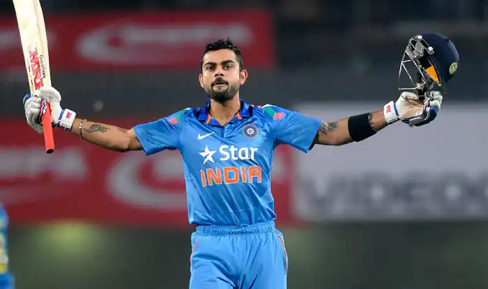
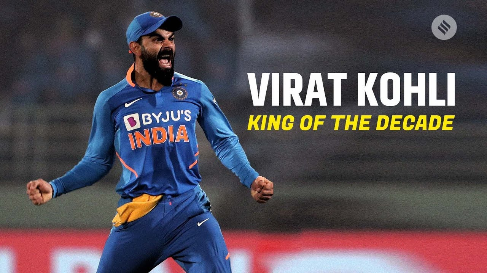

Virat Kohli (Hindustani: [ʋɪˈraːʈ ˈkoːɦliː] ( listen); born 5 November 1988) is an Indian cricketer and the current captain of the India national team. A right-handed top-order batsman, Kohli is regarded as one of the best contemporary batsmen in the world.[3] He plays for Royal Challengers Bangalore in the Indian Premier League (IPL), and has been the team's captain since 2013. Kohli is consistently rated as one of the top-ranked batsmen in the world, according to the ICC Player Rankings. Among Indian batsmen, Kohli has his best ever Test rating (937 points), ODI rating (911 points) and T20I rating (897 points).
Kohli captained India Under-19s to victory at the 2008 Under-19 World Cup in Malaysia. After a few months later, he made his ODI debut for India against Sri Lanka at the age of 19. Initially having played as a reserve batsman in the Indian team, he soon established himself as a regular in the ODI middle-order and was part of the squad that won the 2011 World Cup. He made his Test debut in 2011 and shrugged off the tag of "ODI specialist" by 2013 with Test hundreds in Australia and South Africa.[4] Having reached the number one spot in the ICC rankings for ODI batsmen for the first time in 2013,[5] Kohli also found success in the Twenty20 format, winning the Man of the Tournament twice at the ICC World Twenty20 (in 2014 and 2016).

Kohli was appointed the vice-captain of the ODI team in 2012 and handed over the Test captaincy following Mahendra Singh Dhoni's Test retirement in 2014. In early 2017, he became the limited-overs captain as well after Dhoni stepped down from the position. In ODIs, Kohli has the second highest number of centuries and the highest number of centuries in run-chases in the world. He holds the world record for being the fastest batsman to 8,000, 9,000, 10,000,11,000 and 12,000 runs in ODI cricket, reaching the milestones in 175, 194, 205 , 222 and 242 innings respectively.[6][7] [8][9][10] Kohli has been the recipient of many awards such as the Sir Garfield Sobers Trophy (ICC Cricketer of the Year) in 2017 and 2018; ICC Test Player of the Year 2018; ICC ODI Player of the Year in 2012, 2017 and 2018 and Wisden Leading Cricketer in the World in 2016, 2017 and 2018.[11] He was given the Arjuna Award in 2013, the Padma Shri under the sports category in 2017[12] and the Rajiv Gandhi Khel Ratna, the highest sporting honour in India, in 2018.[13] Kohli is ranked as one of the world's most famous athletes by ESPN[14] and one of the most valuable athlete brands by Forbes.[15] In 2018, Time magazine named Kohli one of the 100 most influential people in the world.[16] In 2020, Kohli was ranked 66th in Forbes list of the top 100 highest paid athletes in the world for the year 2020 with estimated earnings of $26 million. Virat Kohli is the only cricketer to feature in Forbes.[17] In March 2021, Kohli became the first Asian celebrity to reach 100 million followers on Instagram.[18] As of March 2021, Kohli is the only batsmen ranked in top 5 as per ICC Player Rankings across all formats.[19][20]
Early life
Virat Kohli was born on 5 November 1988 in Delhi into a Punjabi Hindu family.[21] His father, Prem Kohli, worked as a criminal lawyer and his mother, Saroj Kohli, is a housewife.[22] He has an older brother, Vikas, and an older sister, Bhavna.[23] According to his family, when he was three-years old, Kohli would pick up a cricket bat, start swinging it and ask his father to bowl at him.[24]

Kohli was raised in Uttam Nagar[25] and started his schooling at Vishal Bharti Public School. In 1998, the West Delhi Cricket Academy was created and a nine-year-old Kohli was part of its first intake.[25] Kohli's father took him to the academy after their neighbours suggested that "Virat shouldn't waste his time in gully cricket and instead join a professional club".[22] Kohli trained at the academy under Rajkumar Sharma and also played matches at the Sumeet Dogra Academy at Vasundhara Enclave at the same time.[25] Sharma recounts Kohli's early days at his academy, "He oozed talent. It was so difficult to keep him quiet. He was a natural in whatever he did and I was most impressed with his attitude. He was ready to bat at any spot, and I had to literally push him home after the training sessions. He just wouldn’t leave."[26] In ninth grade, he shifted to Saviour Convent in Paschim Vihar to help his cricket practice.[22] Apart from sports, Kohli was good at academics as well, and his teachers remember him as "a bright and alert child".[27] Kohli's family lived in Meera Bagh until 2015 when they moved to Gurgaon.[28]
Youth and domestic career
Kohli first played for Delhi Under-15 team in October 2002 in the 2002–03 Polly Umrigar Trophy. He was the leading run-scorer for his team in that tournament with 172 runs at an average of 34.40.[31] He became the captain of the team for the 2003–04 Polly Umrigar Trophy[32] and scored 390 runs in 5 innings at an average of 78 including two centuries and two fifties.[33] In late 2004, he was selected in the Delhi Under-17 team for the 2003–04 Vijay Merchant Trophy. He scored 470 runs in four matches at an average of 117.50 with two hundreds and top-score of 251*.[34] Delhi Under-17s won the 2004–05 Vijay Merchant Trophy in which Kohli finished as the highest run-scorer with 757 runs from 7 matches at an average of 84.11 with two centuries.[35] In February 2006, he made his List A debut for Delhi against Services but did not get to bat.[36]
International career
Early years
In August 2008, Kohli was included in the Indian ODI squad for tour of Sri Lanka and the Champions Trophy in Pakistan. Prior to the Sri Lankan tour, Kohli had played only eight List A matches,[56] and his selection was called a "surprise call-up".[57] During the Sri Lankan tour, as both first-choice openers Sachin Tendulkar and Virender Sehwag were injured, Kohli batted as a makeshift opener throughout the series. He made his international debut, at the age of 19, in the first ODI of the tour and was dismissed for 12.[58] He made his first ODI half century, a score of 54, in the fourth match which helped India win the series.[58] He had scores of 37, 25 and 31 in the other three matches.[58] India won the series 3–2 which was India's first ODI series win against Sri Lanka in Sri Lanka.
After the Champions Trophy was postponed to 2009, Kohli was picked as a replacement for the injured Shikhar Dhawan in the India A squad for the unofficial Tests against Australia A in September 2008.[59] He batted only once in the two-match series, and scored 49 in that innings.[60] Later that month in September 2008, he played for Delhi in the Nissar Trophy against SNGPL (winners of Quaid-i-Azam Trophy from Pakistan) and top-scored for Delhi in both innings, with 52 and 197.[61] The match was drawn but SNGPL won the trophy on first-innings lead.[62] In October 2008, Kohli played for Indian Board President's XI in a four-day tour match against Australia. He made 105 and 16* in that match against a bowling line-up consisting of Brett Lee, Stuart Clark, Mitchell Johnson, Peter Siddle and Jason Krejza.[63]
Kohli was included in the squad for the home ODI series against England in November 2008 but was not given a chance to play, due to the inclusion of Tendulkar and Sehwag in the team.[64] In December 2008, Kohli was given a Grade D contract in the annual BCCI contracts list which entitled him to receive ₹1.5 million (equivalent to ₹3.4 million or US$47,000 in 2019).[65] He was then dropped from the squad for the five-match ODI series in Sri Lanka against Sri Lanka in January 2009.
Kohli was selected in the four-team Emerging Players Tournament in July–August 2009 held in Australia. He opened the innings for India Emerging Players in that tournament and finished as the leading run-getter with 398 runs from seven matches at an average of 66.33.[66] He scored 104 off 102 balls in the final against South Africa Emerging Players at Brisbane to help his team win the match by 17 runs and clinch the title.[67] At the conclusion of the tournament, Kris Srikkanth, the chairman of the national selection committee, was impressed with Kohli and remarked "I must say, opener Virat Kohli was outstanding. Some of the shots he played spoke about his ability."[68] Kohli has called this tournament as the "turning point" of his career.[69]
Tendulkar was rested for the tri-nation ODI tournament in Bangladesh in January 2010, which enabled Kohli to play in each of India's five matches. Against Bangladesh, he scored 91 to help secure a win after India collapsed to 51/3 early in their run-chase of 297.[58] In the next match against Sri Lanka, Kohli ended unbeaten on 71 to help India win the match with a bonus point having chased down their target of 214 within 33 overs. The next day, he scored his second ODI century, against Bangladesh, bringing up the mark with the winning runs.[74] He became only the third Indian batsman to score two ODI centuries before their 22nd birthday, after Tendulkar and Suresh Raina.[75] Kohli was much praised for his performances during the series[69][76] in particular by the Indian captain Dhoni.[77] Although Kohli made only two runs in the final against Sri Lanka in a four-wicket Indian defeat,[58] he finished as the leading run-getter of the series with 275 runs from five innings at an average of 91.66.[78] In the three-match ODI series at home against South Africa in February, Kohli batted in two games and had scores of 31 and 57.[58]